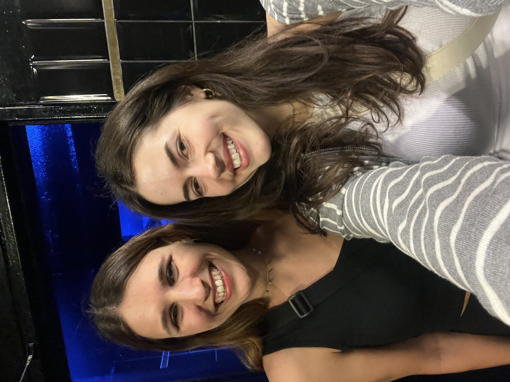
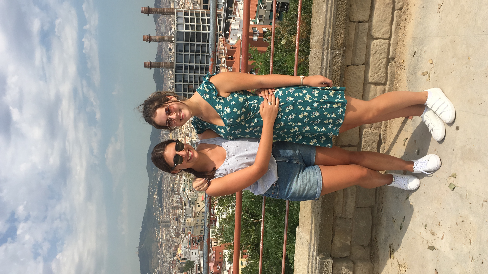
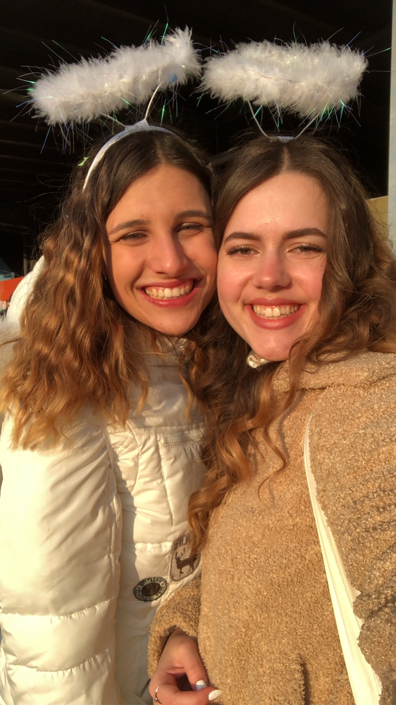
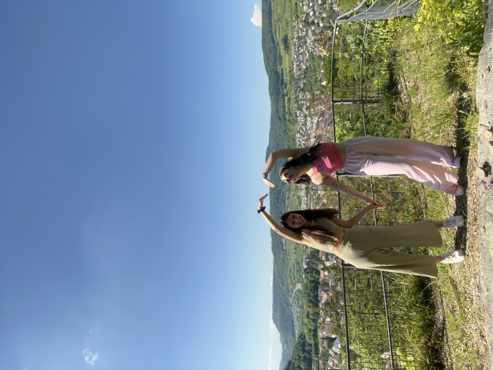

31.08.2026 — 26.01.2027
Für deine Reise habe ich dir etwas Kleines mitgegeben,
das keinen Platz in deinem Rucksack braucht.
21 Wochen lang wartet hier jede Woche eine kleine Überraschung von mir auf dich.
Manchmal bekommst du etwas von mir.
Manchmal musst du etwas machen.
Manchmal machen wir etwas gemeinsam.
Ein kleines Stück Zuhause,
während du die Welt entdeckst. 🤍

Meine Bella 🤍
Jetzt ist es tatsächlich so weit. Etwas, worüber wir so lange gesprochen haben und das sich irgendwie immer noch weit weg angefühlt hat, ist plötzlich da: Du packst dein Leben für fünf Monate in einen Rucksack und ziehst mit Lugitsch los, um die Welt zu entdecken.
Und ich weiss gar nicht so richtig, wie ich in Worte fassen soll, wie sehr ich mich für dich freue und gleichzeitig jetzt schon weiss, wie unglaublich fest du mir fehlen wirst.
Seit ungefähr zehn Jahren bist du nun schon ein so wichtiger Teil meines Lebens. Wenn ich daran denke, dass wir uns damals einfach im Gym kennengelernt haben und ich zu diesem Zeitpunkt noch keine Ahnung hatte, was für ein wichtiger Mensch du einmal für mich sein würdest, finde ich das irgendwie verrückt.
Heute bist du aus meinem Leben nicht mehr wegzudenken.
Ich werde dich vermissen. Dein Lachen. Unseren Quatsch zusammen. Unsere Gespräche. Mit dir über Dinge abzulästern, die uns – oder meistens wahrscheinlich mich 😂 – gerade aufregen. Unsere Aperol-Momente. Und vor allem dieses Gefühl, zu wissen, dass du da bist.
Aber noch viel mehr als ich dich vermissen werde, freue ich mich darauf, dass du das hier erleben darfst.
Ich wünsche dir, dass du in diesen fünf Monaten ganz viel Neues siehst, Dinge machst, von denen du heute vielleicht noch gar nicht weisst, dass du sie einmal machen wirst, und Erinnerungen sammelst, von denen du mir noch in zehn Jahren erzählen wirst.
Ich wünsche dir und Luca so viele wunderschöne gemeinsame Momente. Dass ihr zusammen lacht, euch gegenseitig auffangt, euch vielleicht zwischendurch auch mal auf die Nerven geht 😂 und diese Reise euch noch einmal auf eine ganz neue Art zusammenschweisst.
Und vor allem wünsche ich dir, dass du diese Zeit auch wirklich für dich nutzt.
Du bist so oft diejenige, die an alle anderen denkt. Die schaut, dass es allen gut geht. Die da ist. Die sich kümmert.
Für diese fünf Monate wünsche ich dir, dass du zwischendurch einfach einmal nur an dich denkst.
Dass du abschaltest. Geniesst. Im Moment bist. Nicht darüber nachdenkst, was du solltest oder was zuhause gerade passiert. Sondern irgendwo auf dieser Welt sitzt und einfach denkst:
Ist das gerade schön.
Und falls es zwischendurch einmal nicht schön ist – falls du Heimweh hast, alles zu viel wird, du einen schlechten Tag hast oder einfach jemanden brauchst – dann möchte ich, dass du eines nie vergisst:
Ein paar tausend Kilometer ändern absolut nichts daran, dass ich da bin.
Du kannst immer auf mich zählen. Egal ob du gerade fünf Minuten oder zwölf Zeitzonen entfernt bist.
Und genau deshalb gibt es diese kleine Seite.
Ich kann leider nicht fünf Monate lang in deinem Rucksack mitreisen – und wir wissen beide, dass dafür sowieso kein Platz wäre 😂 – also habe ich mir etwas anderes überlegt.
21 Wochen. 21 kleine Stücke von mir.
Manchmal wird hier etwas auf dich warten, das dich hoffentlich zum Lachen bringt. Manchmal eine Erinnerung an uns. Manchmal etwas, das ich dir sagen möchte. Manchmal bekommst du eine kleine Aufgabe. Und manchmal musst du vielleicht sogar etwas für mich tun.
Was jeweils kommt, verrate ich dir nicht.
Nur eines: Schau nächsten Montag wieder vorbei. 🤍
Jetzt aber Handy weg.
Geh los, Bella. Entdeck die Welt. Mach ganz viele Erinnerungen mit Lugitsch. Lach so viel du kannst. Trink den einen oder anderen Aperol für mich mit. Und geniesse jeden einzelnen Moment.
Ich hab dich unglaublich fest lieb.
Und egal, wo du gerade bist:
Ein kleines Stück Zuhause reist ab jetzt immer mit dir. 🤍
Eine Woche bist du jetzt schon unterwegs. 🥹
Und weil ich gerade natürlich nicht neben dir stehen und alles mit eigenen Augen sehen kann, habe ich diese Woche eine kleine Aufgabe für dich:
Mach irgendwann diese Woche ein Foto von einem Moment,
bei dem du dir denkst:
„Das würde ich Rahel jetzt gerne zeigen.“
Keine Sehenswürdigkeit.
Kein perfektes Ferienfoto.
Kein Bild, das du posten würdest.
Vielleicht ist es etwas Schönes. Vielleicht etwas Lustiges. Vielleicht etwas komplett Banales.
Einfach ein Moment, bei dem du kurz an mich denkst.
Und dann schick ihn mir. 🤍
📸 Foto an Rahel schickenEs gibt Lieder, die einfach sofort eine Person im Kopf auslösen.
Und bei diesem hier bist das ganz klar du.
Ich muss sofort an Berlin denken. An unsere Telefonkabine. An diesen komplett absurden, lustigen Moment, in dem wir zusammen L’amour toujours gehört haben und einfach so viel Spass hatten.
Eigentlich erinnert mich nicht nur dieses Lied an diesen einen Moment, sondern irgendwie an uns generell.
Egal, was wir zusammen machen.
Egal, wo wir sind.
Egal, ob es eine Reise, ein Abend
oder einfach irgendein komplett normaler Moment ist.
Mit dir ist es immer schön.
Hör dir L’amour toujours einmal ganz bewusst an.
Vielleicht irgendwo unterwegs. Vielleicht mit Kopfhörern. Vielleicht bei einem Drink.
Und denk für ein paar Minuten an unsere Telefonkabine in Berlin.
🎵 L’amour toujours anhören
Bella, schau uns an. 😂🤍
17 Jahre alt. Barcelona. Unsere ersten richtigen Ferien alleine.
Zwei junge Schnaufer, die wahrscheinlich das Gefühl hatten, gerade schon wahnsinnig erwachsen zu sein. 😂
Wir haben gefeiert, gebadet, uns Sachen angeschaut, gegessen, gelacht und einfach Barcelona zusammen unsicher gemacht.
Was hatten wir bitte für eine schöne Zeit zusammen. 🥹🤍
Weil ich uns da mit 17 sehe, irgendwo in Barcelona, bei einem unserer ersten kleinen Abenteuer zusammen …
… und du jetzt, Jahre später, mit deinem Rucksack auf der anderen Seite der Welt unterwegs bist. 🥹🌏
Wie viele Reisen.
Wie viele Partys.
Wie viele Aperols.
Wie viele Lachanfälle.
Es ist eigentlich völlig egal, wo wir sind oder was wir machen.
Mit dir ist es immer toll.
Bella, diese Woche machen wir etwas zusammen.
Hol dir irgendwann diese Woche ein Getränk, auf das du gerade richtig Lust hast.
Such dir einen schönen Ort. Setz dich hin. Schau dich kurz um.
Und dann mach ein Foto von deinem Getränk und deiner Aussicht.
Schick es mir. 🤍
Ich mache diese Woche dasselbe zuhause.
Auf uns, Bella. Egal wie viele Kilometer gerade zwischen uns liegen. 🤍
🍹 Cheers an Rahel schickenBella, diese Woche gibt’s keinen langen Text.
Ich wollte einfach, dass du kurz meine Stimme hörst.
Kopfhörer rein, kurz hinsetzen und Play drücken. 🤍
Ein kleines bisschen Zuhause für deine Ohren. 🤍
Bella, diese Woche gibt’s keine Aufgabe, keinen grossen Text und auch keine Lebensweisheit.
Nur diesen kleinen Beweis dafür, dass wir schon immer ein bisschen albern zusammen waren. 😂🤍
Ich liebe genau solche Videos von uns.
Komplett unnötig.
Komplett chaotisch.
Und genau deshalb so gut.
Miss you, Bellacita. 🤍
Bella, heute einfach ein kleiner Reminder, warum du für mich du bist.
Du bist meine Ride or Die.
Mit dir kann man einfach alles machen. Und ich meine wirklich alles.
Mit dir kann ich spontan irgendwohin fahren.
Einen Aperol trinken.
Stundenlang quatschen.
Irgendwelche spontanen Sachen machen.
Reisen.
Einen komplett unspektakulären Abend verbringen.
Oder irgendeine dumme Idee haben –
und ziemlich sicher bist du dabei. 😂
Mit dir braucht es eigentlich gar keinen Plan, damit es gut wird.
Du bist einfach immer dabei. Nicht nur bei den schönen, lustigen Sachen, sondern auch dann, wenn es wirklich darauf ankommt.
Du bist die Person, die ich anrufen kann.
Die zuhört.
Die mitfühlt.
Die sich mit mir freut.
Die sich mit mir aufregt. 😂
Und bei der ich weiss: Wenn etwas ist, bist du da.
Und ich hoffe, du weisst, dass es andersrum ganz genauso ist.
I’m always in your corner. 🤍
PS: Falls du auf dieser Reise irgendeine komplett bescheuerte Idee hast, bei der du kurz denkst: „Soll ich wirklich?“
Stell dir einfach vor, ich stehe neben dir und sage:
„Ja Bella, mach.“ 😂🤍
Bella, diese Woche will ich kein spektakuläres Foto von dir.
Keinen Sonnenuntergang.
Keine Sehenswürdigkeit.
Kein perfektes Reisefoto.
Ich will etwas ganz Normales.
Etwas, das heute vielleicht komplett unscheinbar wirkt – aber dich in ein paar Jahren sofort wieder genau an diese Zeit zurückbringen könnte.
Vielleicht dein Frühstück.
Euer Zimmer.
Dein Rucksack auf dem Boden.
Eine Bushaltestelle.
Deine Schuhe.
Irgendeine Strasse.
Mach genau davon ein Foto mit deiner Kodak (der kleinen Kamera, die ich dir geschenkt habe 🤍).
Und behalt es.
„Ach ja. Genau so hat sich diese Reise auch angefühlt.“ 🤍
Bella, heute gibt’s wieder eine kleine Erinnerung von uns. 🤍
Fasnacht in Sissach.

Wir zwei als Engel verkleidet – natürlich eine absolut passende Kostümwahl für uns. 😇😂 Wobei … ein kleines bisschen Wahrheit steckt ja vielleicht doch dahinter. 😉
Ich weiss noch ganz genau, wie viel Spass ich mit dir hatte.
Wir haben gefeiert, gelacht, herumgealbert und es uns – natürlich auch alkoholtechnisch – ziemlich gut gehen lassen. 😂
Ich denke daran, wie sehr ich es liebe, solche Dinge mit dir zu machen.
Mit dir irgendwo hinzugehen.
Uns irgendeine spontane Idee auszudenken.
Uns zu verkleiden.
Zu feiern.
Ein bisschen zu viel zu trinken. 😂
Und irgendwann einfach nur noch über irgendetwas
komplett Unnötiges zu lachen.
Denn irgendwie weiss ich bei dir schon vorher:
Es wird lustig.
Zwei kleine Engel in Sissach, die selbstverständlich äusserst vorbildlich und engelsgleich durch die Fasnacht gegangen sind. 😇😂
„Weisst du noch …?“
Für ein bisschen Herumalbern mit dir bin ich immer zu haben. 😇🤍
Bella, nach zehn Wochen wird es Zeit für einen kleinen Test. 😂
Es geht nur darum, ob du dich noch an unsere Klassiker erinnerst. 🤍
5 Fragen. Mal schauen, ob du bestehst. 😂
Bella, wir sind einfach schon bei Woche 12.
Wie bitte ist das so schnell gegangen? 🥹
Vor gar nicht so langer Zeit war der 31. August noch irgendwo in der Zukunft und jetzt bist du schon so lange unterwegs. Du hast wahrscheinlich unzählige neue Eindrücke gesammelt, viel gesehen, erlebt, gelacht und gestaunt.
„Was machen wir hier eigentlich?“ 😂
Diese Woche gibt es keine Aufgabe. Nur einen kleinen Moment zum Innehalten.
Schau mal, was du bis jetzt schon alles erlebt hast:
Neue Orte.
Neue Erinnerungen.
Viele Momente mit Luca.
Und unzählige kleine Geschichten,
von denen ich wahrscheinlich noch gar nichts weiss.
Und das Schönste ist:
Es kommt noch so viel.
Ich hoffe, du geniesst diese Zeit weiterhin und setzt dich nicht unter Druck, jeden Tag etwas Besonderes erleben zu müssen. Du darfst auch mal müde sein, nichts machen und einfach nur den Moment geniessen.
Du machst gerade etwas richtig Grosses für dich.
Und egal, was passiert:
Ich bin da.
Bei jedem Chaos, jedem Highlight und jedem Heimweh-Moment.
Immer. 🤍
Noch ganz viel Welt wartet auf dich. 🌍
Bella, diese Woche gibt’s wieder eine kleine Mission. 🌎
Diese Woche möchte ich, dass du ganz bewusst einmal Ja zu etwas sagst, das du normalerweise vielleicht nicht machen würdest.
Nichts Grosses.
Nichts Verrücktes.
Und natürlich nichts, bei dem du dich unwohl fühlst.
Vielleicht probierst du ein Essen, bei dem du normalerweise sagen würdest: „Nein danke.“ 😂
Vielleicht gehst du irgendwo hinein, weil es interessant aussieht. Vielleicht probierst du eine neue Aktivität aus. Vielleicht bestellst du irgendeinen komischen Drink.
Oder vielleicht ergibt sich spontan etwas, bei dem dein erster Gedanke ist:
„Hmm … weiss nicht.“
Und dann denkst du an mich:
„Ja Bella, mach.“ 😂🤍
Denn wahrscheinlich werden genau aus solchen spontanen Entscheidungen die Geschichten, die man später immer wieder erzählt.
Dann will ich natürlich davon hören. 🤍
Bella, mittlerweile gibt es eine ziemlich lange Liste mit Dingen, bei denen ich mir denke:
„Das muss ich unbedingt wieder mit Laura machen, wenn sie zurück ist.“ 😂🤍
Es sind genau diese ganz normalen Dinge mit dir, die mir fehlen.
Ich kann es kaum erwarten …
🍹 … wieder mit dir einen Aperol trinken zu gehen.
😂 … mit dir über irgendetwas komplett Unnötiges Tränen zu lachen.
🗣️ … dir eine Geschichte persönlich zu erzählen und dabei ungefähr 27-mal vom Thema abzuschweifen.
👀 … mit dir über Dinge und Menschen zu lästern, die uns gerade aufregen.
🎶 … mit dir irgendwo zu sitzen, gute Musik zu hören und unsere Songs viel zu laut mitzusingen.
🚗 … wieder irgendwelche schönen Ausflüge mit dir zu machen und zusammen neue Orte zu entdecken.
🛋️ … aber genauso einfach irgendwo mit dir zu sitzen und absolut nichts Besonderes zu machen.
Und natürlich:
Dich endlich wieder richtig in den Arm zu nehmen. 🤍
Ich freue mich jetzt schon auf all die Geschichten, die wir uns erzählen müssen, wenn du wieder da bist.
Und wahrscheinlich brauchen wir dafür ungefähr drei Tage und sehr viel Aperol. 😂
Geniesse weiter deine Reise, Bella.
Unsere nächsten Erinnerungen laufen uns nicht davon. 🤍
💭 Und jetzt du …
Was ist eine Sache, die DU unbedingt mit mir machen möchtest,
wenn du wieder zuhause bist?
Bella, diese Woche geht’s nicht um mich.
Diese Woche geht’s um dich. 🤍
Stell dir kurz vor, du bist wieder zuhause. Der Rucksack ist ausgepackt, die Reise ist vorbei und plötzlich beginnt wieder der ganz normale Alltag.
Und genau für diese Laura sollst du heute etwas schreiben.
Schreib deinem zukünftigen Ich eine kleine Nachricht.
Drei Sätze reichen. Oder fünf. Oder nur ein einziger Satz, wenn genau der alles sagt.
Was sollst du von dieser Reise niemals vergessen? Was möchtest du aus dieser Zeit mit nach Hause nehmen? Was hast du vielleicht über dich selbst gelernt?
„Wenn du das hier liest, vergiss bitte nicht …“
Und lies es dir am 26. Januar 2027 nochmal durch. 🤍
Auf so einer Reise sammelt man nicht nur Orte, Fotos und Erinnerungen. Manchmal merkt man auch Dinge über sich selbst, die im normalen Alltag viel zu schnell wieder untergehen.
Also schreib dir etwas, das du später noch wissen sollst. 🤍
Diese Nachricht ist nur für dich. Du musst sie mir nicht schicken. Heb sie einfach auf. 🤍
Bella, diese Woche bekommst du einfach ein kleines Stück Zuhause. 🤍
Nur drei kleine Dinge, die mich gerade an dich erinnern.
1. Ein Foto 📸

Ich finde dieses Bild von uns einfach unglaublich süss. 🥹🤍
Für mich sieht man darauf irgendwie genau, wie gerne wir uns haben und gleichzeitig auch, wie viel Spass wir miteinander haben.
Ich mag das Foto einfach, weil es für mich ganz viel von uns hat.
Einfach wir zwei. 🤍
2. Ein Song 🎶
Borderline – Ely Oaks
Bei Ely Oaks muss ich direkt an uns denken. Ans Tension Festival, daran, wie sehr wir ihn gefeiert haben, an gute Musik und einfach an richtig schöne Erinnerungen zusammen.
Techno verbindet uns irgendwie auch ein bisschen.
Ja. Genau das fühlen wir gerade beide. 😂🤍
🎶 Borderline anhören3. Eine kleine Nachricht 💌
Falls du heute kurz Heimweh hast oder einfach an zuhause denkst:
Hier verändert sich einiges und gleichzeitig irgendwie gar nichts.
Und irgendwo dazwischen gibt es immer wieder Momente, bei denen ich mir denke:
„Das muss ich Bella erzählen.“
Und genau da fehlst du mir einfach. 🤍
Nicht, weil du zuhause sein solltest, sondern einfach, weil du ein so grosser Teil meines Zuhauses bist.
Egal, wie weit weg du gerade bist: Du gehörst hierher. 🤍
Hab dich lieb, Bella. 🤍
Bella, Weihnachten sieht dieses Jahr für dich wahrscheinlich ein bisschen anders aus als sonst. 🎄🤍
Vielleicht keine gewohnte Weihnachtsstimmung. Vielleicht kein typisches Essen. Vielleicht keine Familie um dich herum. Vielleicht Sonne statt Kälte. 😂
Und genau deshalb bekommst du diese Woche eine kleine Mission:
Mach dir irgendwo auf deiner Reise einen kleinen Weihnachtsmoment.
Kauf dir etwas Feines. Hör ein Weihnachtslied. Trink etwas, das sich ein bisschen nach Weihnachten anfühlt. Such irgendwo Weihnachtslichter. Schau einen Weihnachtsfilm.
Oder mach mit Luca einfach irgendetwas, bei dem du kurz denkst:
„Okay. Das ist jetzt unser kleines Weihnachten hier.“ 🎄🤍
Dieses eine Weihnachten auf der anderen Seite der Welt. 🤍
Und wenn du magst, schick mir ein Foto davon.
Merry almost Christmas, Bellacita. 🎄🤍
🎄 Meinen Weihnachtsmoment an Rahel schickenBella, irgendwie ist 2026 einfach fast vorbei.
Und ich glaube, dieses Jahr wird eines von denen sein, an die du später noch sehr, sehr lange zurückdenken wirst. 🥹🤍
Deshalb gibt’s diese Woche keine grosse Aufgabe. Nur einen ganz kleinen Jahresrückblick.
✨ Drei Dinge aus 2026
1. Welcher Moment aus diesem Jahr hat dich richtig glücklich gemacht?
Nicht unbedingt der spektakulärste. Einfach einer, bei dem du beim Zurückdenken sofort lächeln musst.
2. Was hast du dieses Jahr gemacht, auf das du stolz bist?
Etwas Grosses. Etwas Kleines. Vollkommen egal.
3. Was möchtest du aus 2026 unbedingt mit ins neue Jahr nehmen?
Vielleicht ein Gefühl.
Eine Erkenntnis.
Mehr Mut.
Mehr Gelassenheit.
Oder einfach den Wunsch,
öfter genau das zu tun, was dir guttut.
Nimm dir einfach fünf Minuten und denk darüber nach. 🤍
Du bist losgezogen. Hast so viel Neues gesehen. Hast mit Luca Erinnerungen gesammelt, die euch niemand mehr nehmen kann.
Ich hoffe, du gehst aus 2026 mit ganz vielen Erinnerungen im Kopf und einem richtig guten Gefühl ins neue Jahr. ✨
Ich bin vor allem dankbar, dass auch 2026 wieder ein weiteres Jahr war, in dem ich dich meine beste Freundin nennen durfte. 🤍
Happy almost New Year. 🥂✨
Bella, neues Jahr, gleiche beste Freundin. 🤍
Diese Woche bekommst du einfach mal etwas von mir. Einen kleinen Reminder.
Nicht darüber, wie toll unsere Freundschaft ist, sondern darüber, wie toll DU bist.
🤍 5 Dinge, die du hoffentlich nie über dich vergisst
1. Du bist unglaublich fürsorglich.
Du denkst so oft an die Menschen um dich herum. Du hörst zu, fragst nach, kümmerst dich und bist da, wenn jemand dich braucht.
Und ich hoffe, du vergisst dabei nie, dass du selbst genauso viel Fürsorge verdient hast.
2. Man kann sich auf dich verlassen.
Wenn du sagst, dass du da bist, dann bist du da. Und dieses Gefühl bedeutet mir unglaublich viel.
3. Mit dir macht das Leben einfach mehr Spass. 😂
Egal ob wir etwas planen oder überhaupt keinen Plan haben. Ob wir irgendwo unterwegs sind, Musik hören, einen Aperol trinken, herumalbern oder einfach nur zusammensitzen:
Mit dir ist es besser.
4. Du hast ein riesiges Herz.
Du gibst den Menschen, die du liebst, so viel von dir. Und ich hoffe, du weisst, wie sehr das gesehen und geschätzt wird.
5. Du bist viel mutiger, als du manchmal wahrscheinlich selbst denkst.
Du hast dein Zuhause für fünf Monate hinter dir gelassen, dein Leben in einen Rucksack gepackt und bist losgezogen, um die Welt zu sehen.
Und inzwischen bist du schon so weit gekommen. Nicht nur geografisch. 🌍
„Wow, was habe ich mir eigentlich alles zugetraut?“ 🤍
Denn ich könnte dir wahrscheinlich noch ungefähr 500 weitere Dinge aufzählen, die ich an dir liebe und bewundere. 😂
Hab dich ganz fest lieb, Bella. Und ich hoffe, du siehst dich manchmal ein kleines bisschen so, wie ich dich sehe. 🤍
Bella, wir sind einfach schon bei Woche 20.
Vor ein paar Monaten warst du gerade erst unterwegs – und jetzt ist das Ende dieser Reise tatsächlich schon langsam in Sicht. 🥹
Aber noch nicht ganz. Du hast noch ein bisschen Zeit.
🧳 Bevor du heimkommst …
1. Mach noch ein Foto von einem ganz normalen Moment.
Nicht schön. Nicht perfekt. Einfach echt.
2. Iss oder trink noch einmal etwas, das du auf dieser Reise richtig gerne hattest.
3. Schau dich einmal ganz bewusst um.
Ohne Handy. Ohne Foto. Einfach für ein paar Sekunden. Und merk dir, wo du gerade bist.
4. Frag Luca, was sein Lieblingsmoment der ganzen Reise war.
Und sag ihm auch deinen. 🤍
5. Mach noch eine Sache einfach nur, weil du gerade Lust darauf hast.
Kein „wir sollten noch“. Kein „das muss man gesehen haben“. Einfach etwas, das sich gerade gut anfühlt.
Du warst da. Du hast es erlebt. Du hast Erinnerungen gesammelt.
Ich freue mich natürlich unglaublich darauf, dich bald wieder hier zu haben.
Sei noch dort, solange du dort bist. 🤍
Zuhause läuft dir nicht davon. Und ich übrigens auch nicht. 😂🤍
Geniesse deine letzten Reisetage, Bellacita.
Nächste Woche wartet dann der letzte Eintrag auf dich. 🥹🤍
Meine Bella 🤍
Und da ist sie einfach:
Woche 21.
Der letzte Eintrag auf dieser kleinen Seite.
Vor ein paar Monaten warst du gerade erst dabei, loszuziehen und jetzt ist diese riesige Reise schon fast vorbei.
Du hast so viel gesehen, erlebt, gelernt und mit Luca Erinnerungen gesammelt, die euch niemand mehr nehmen kann.
Und ich hoffe, du schaust irgendwann auf diese Zeit zurück und denkst:
„Ich bin so froh, dass ich das gemacht habe.“ 🤍
Ich hoffe, du nimmst nicht nur Fotos und Geschichten mit nach Hause, sondern auch das Gefühl, dass du dir selbst viel mehr zutrauen kannst, als du manchmal denkst.
Ich bin unglaublich stolz auf dich, Bella.
Und eigentlich wollte ich dir mit dieser ganzen Seite vor allem eines zeigen:
Egal wie viele Kilometer zwischen uns liegen, du kannst immer auf mich zählen.
Du warst nie wirklich weg für mich.
Du warst einfach nur woanders. 🤍
Und jetzt freue ich mich einfach riesig darauf, dich wieder richtig in den Arm zu nehmen.
Auf unsere Gespräche.
Auf unsere Lachanfälle.
Auf gute Musik.
Auf Aperol.
Auf Ausflüge.
Auf ganz normale Abende zusammen.
Und vor allem auf all die neuen Erinnerungen, die noch vor uns liegen.
Denn diese Reise geht zu Ende.
Aber wir natürlich nicht. 🤍
Danke, dass du meine beste Freundin bist.
Danke, dass du immer da bist.
Und danke für all die Erinnerungen, die wir schon haben und die noch kommen werden.
Ich hab dich unglaublich fest lieb, Bellacita. 🤍
Welcome home, Bella. 🤍
21 weeks.
A million memories.
One friendship. 🤍